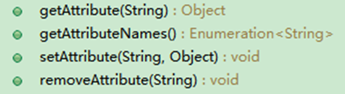

原文连接:https://www.cnblogs.com/Open-ing/p/12075074.html
-
-
从狭义上来讲，Servlet指的是javax.servlet.Servlet接口及其子接口，也可以指实现了Servlet接口的实现类。
-
Servlet（Server Applet）作为服务器端的一个组件，它的本意是“服务器端的小程序”。
-
Servlet的实例对象由Servlet容器负责创建；
-
Servlet的方法由容器在特定情况下调用；
-
-
① 搭建Web开发环境
② 创建动态Web工程
③ 创建javax.servlet.Servlet接口的实现类：com.atguigu.servlet.MyFirstServlet
<!-- 声明一个Servlet，配置的是Servlet的类信息 -->
<servlet>
<!-- 这是Servlet的别名，一个名字对应一个Servlet。相当于变量名 -->
<servlet-name>MyFirstServlet</servlet-name>
<!-- Servlet的全类名，服务器会根据全类名找到这个Servlet -->
<servlet-class>com.servlet.MyFirstServlet</servlet-class>
</servlet>
<!-- 建立Servlet的请求映射信息 -->
<servlet-mapping>
<!-- Servlet的别名，说明这个Servlet将会响应下面url-pattern的请求 -->
<servlet-name>MyFirstServlet</servlet-name>
<!-- Servlet响应的请求路径。如果访问这个路径，这个Servlet就会响应 -->
<url-pattern>/MyFirstServlet</url-pattern>
</servlet-mapping>说明：
<url-pattern>：这个url-pattern可以配置多个，这时表示的就是访问这些url都会触发这个Servlet进行响应，运行浏览器，访问刚才配置的url路径，Servlet的service方法就会被调用。
<url-pattern>中的文本内容必须以 / 或 *. 开始书写路径。相当于将资源映射到项目根目录下形成虚拟的资源文件。
<servlet-mapping>中的<url-pattern>
⑥ 在WebContent目录下创建index.html
⑦ 在index.html中加入超链接 <a href="MyFirstServlet">To Servlet</a>
⑧ 点击超链接测试Servlet
如果配置文件一旦修改，需要重启服务器来重新部署web项目。
-
接收请求 【解析请求报文中的数据：请求参数】
-
处理请求 【DAO和数据库交互】
-
完成响应 【设置响应报文】
简单的叙述生命周期，就是对象在容器中从开始创建到销毁的过程。
Servlet对象是Servlet容器创建的，生命周期方法都是由容器调用的。这里指的就是Tomcat
-
-
作用：是在Servlet对象创建后，执行一些初始化操作。例如，读取一些资源文件、配置文件，或建立某种连接（比如：数据库连接）
-
init()方法只在创建对象时执行一次，以后再接到请求时，就不执行了
-
-
-
在每次接到请求后都会执行。
-
Servlet的作用，主要在此方法中体现。
-
④ Servlet对象销毁：destroy()
-
服务器重启、服务器停止执行或Web应用卸载时会销毁Servlet对象，会调用public void destroy()方法。
-
Servlet请求过程
-
第一次请求
-
调用构造器，创建对象
-
执行init()方法
-
执行service()方法
-
-
后面请求
-
-
对象销毁前
-
执行destroy()方法
-
-
-
每一个Servlet都有一个唯一对应的ServletConfig对象，代表当前Servlet的配置信息。
-
对象由Servlet容器创建，并传入生命周期方法init(ServletConfig config)中。可以直接获取使用。
-
代表当前Web应用的ServletContext对象也封装到了ServletConfig对象中，使ServletConfig对象成为了获取ServletContext对象的一座桥梁。
-
ServletConfig对象的主要功能
-
获取Servlet名称：getServletName()
-
获取全局上下文ServletContext对象：getServletContext()
-
-
-
-
由于一个Web应用程序中的所有Servlet都共享同一个ServletContext对象，所以ServletContext对象也被称为 application 对象（Web应用程序对象）。
-
对象由Servlet容器在项目启动时创建，通过ServletConfig对象的getServletContext()方法获取。在项目卸载时销毁。
-
ServletContext对象的主要功能
① 获取项目的上下文路径(带/的项目名):
-
虚拟路径：浏览器访问Web应用中资源时所使用的路径。
-
本地路径：资源在文件系统中的实际保存路径。
-
<web-app>
<!-- Web应用初始化参数 -->
<context-param>
<param-name>ParamName</param-name>
<param-value>ParamValue</param-value>
</context-param>
</web-app>获取Web应用初始化参数

-
-
GenericServlet实现Servlet接口
-
HttpServlet继承GenericServlet
-
-
创建Servlet的最终方式
-
-
-
如果想要进行初始化操作，可以重写GenericServlet提供的无参的init()方法，这样就不会影响ServletConfig对象的获取。
-
-
-
对GenericServlet进行进一步的封装和扩展，在service(ServletRequest req, ServletResponse res)方法中，将ServletRequest和ServletResponse转换为HttpServletRequest和HttpServletResponse，根据不同HTTP请求类型调用专门的方法进行处理。
-
今后在实际使用中继承HttpServlet抽象类创建自己的Servlet实现类即可。重写doGet(HttpServletRequest req, HttpServletResponse resp)和doPost(HttpServletRequest req, HttpServletResponse resp)方法实现请求处理，不再需要重写service(ServletRequest req, ServletResponse res)方法了。
-
-
-
浏览器请求服务器时会封装请求报文交给服务器，服务器接受到请求会将请求报文解析生成request对象。
-
功能
1.使用HttpServletRequest对象获取请求参数，即浏览器向服务器提交的数据
//一个name对应一个值
String userId = request.getParameter("userId");//一个name对应一组值
String[] soccerTeams = request.getParameterValues("soccerTeam");
for(int i = 0; i < soccerTeams.length; i++){
System.out.println("team "+i+"="+soccerTeams[i]);
}2.获取url地址参数
String path = request.getContextPath();//重要
System.out.println("上下文路径："+path);
System.out.println("端口号："+request.getServerPort());
System.out.println("主机名："+request.getServerName());
System.out.println("协议："+request.getScheme());3.获取请求头信息
String header = request.getHeader("User-Agent");
System.out.println("user-agent:"+header);
String referer = request.getHeader("Referer");
System.out.println("上个页面的地址："+referer);//登录失败，返回登录页面让用户继续登录4.请求的转发
//获取请求转发对象
RequestDispatcher dispatcher = request.getRequestDispatcher("success.html");
dispatcher.forward(request, response);//发起转发5.向请求域中保存数据
//将数据保存到request对象的属性域中
request.setAttribute("attrName", "attrValueInRequest");
//两个Servlet要想共享request对象中的数据，必须是转发的关系
request.getRequestDispatcher("/ReceiveServlet").forward(request, response);//从request属性域中获取数据
Object attribute = request.getAttribute("attrName");
System.out.println("attrValue="+attribute);功能
1.使用PrintWriter对象向浏览器输出数据
//通过PrintWriter对象向浏览器端发送响应信息
PrintWriter writer = res.getWriter();
writer.write("Servlet response");
writer.close();2.设置响应头
response.setHeader("Content-Type", "text/html;charset=UTF-8");- 设置好以后，会在浏览器的响应报文中看到设置的响应头中的信息。
3.重定向请求
//注意路径问题，加上/会失败，会以主机地址为起始，重定向一般需要加上项目名
response.sendRedirect(“success.html”);- 通过重定向将页面的地址交给浏览器并设置响应状态码为302，浏览器会自动进行跳转。

- 转发的情况下，两个Servlet可以共享同一个Request对象中保存的数据。
- 当需要将后台获取的数据传送到JSP上显示的时候，就可以先将数据存放到Request对象中，再转发到JSP从属性域中获取。此时由于是“转发”，所以它们二者共享Request对象中的数据。
- 转发的情况下，可以访问WEB-INF下的资源。
- 转发以“/”开始表示项目根路径，重定向以”/”开始表示主机地址。
//1.使用RequestDispatcher对象封装目标资源的虚拟路径
RequestDispatcher dispatcher = request.getRequestDispatcher("/index.html");
//2.调用RequestDispatcher对象的forward()方法“前往”目标资源
//[注意：传入的参数必须是传递给当前Servlet的service方法的
//那两个ServletRequest和ServletResponse对象]
dispatcher.forward(request, response);
}- 重定向的情况下，原Servlet和目标资源之间就不能共享请求域数据了。
- HttpServletResponse代表HTTP响应，对象由Servlet容器创建。
//1.调用HttpServletResponse对象的sendRedirect()方法
//2.传入的参数是目标资源的虚拟路径
response.sendRedirect("index.html");| 转发 | 重定向 | |
|---|---|---|
| 浏览器感知 | 在服务器内部完成，浏览器感知不到 | 服务器以302状态码通知浏览器访问新地址，浏览器有感知 |
| 浏览器地址栏 | 不改变 | 改变 |
| 整个过程发送请求次数 | 一次 | 两次 |
| 执行效率 | 效率高 | 效率低 |
| API（或发起者） | Request对象 | Response对象 |
| 能否共享request对象数据 | 能 | 否 |
| WEB-INF下的资源 | 能访问 | 不能访问 |
| 目标资源 | 不局限于当前web应用 |
说明：默认情况下，浏览器是不能访问服务器web-inf下的资源的，而服务器是可以访问的。
解决乱码的方法：就是统一字符编码
- GET请求参数是在地址后面的。我们需要修改tomcat的配置文件。需要在server.xml文件修改Connector标签，添加URIEncoding="utf-8"属性。
- 一旦配置好以后，可以解决当前工作空间中所有的GET请求的乱码问题。
request.setCharacterEncoding("utf-8");- POST请求乱码问题的解决，只适用于当前的操作所在的类中。不能类似于GET请求一样统一解决。因为请求体有可能会上传文件。
- 向浏览器发送响应的时候，要告诉浏览器，我使用的字符集是哪个，浏览器就会按照这种方式来解码
//方法一：
response.setHeader("Content-Type", "text/html;charset=utf-8");//方法二：
response.setContentType("text/html;charset=utf-8");相对路径和绝对路径
绝对路径：虚拟路径以“/”开始，就是绝对路径。
<!-- 给页面中的相对路径设置基准地址 -->
<base href="http://localhost:8080/Test_Path/"/>
总结：
* /的有无
* 有: 采用的是绝对路径
* 无: 采用的是相对路径
* /的含义：
* 用服务器解析代表：当前项目下 (http://localhost:8080/上下文项目名/)
* 用浏览器解析代表：当前主机下(http://localhost:8080/)
* /的几种使用位置：
* 用在转发：采用服务器解析 (相对和绝对没有区别)
* 用在重定向：采用浏览器解析
* 相对路径：response.sendRedirect("pages/user/login_success.html");
* 局对路径：response.sendRedirect(request.getContextPath()+"/pages/user/login_success.html");
* 用在页面上：采用浏览器解析
* 建议采用绝对路径去加载静态资源(css/js/image/video...)
* 方式一：<link href="/上下文项目名/static/css/style.css" type="text/css" rel="stylesheet" >
* 方式二：在head标签中新增一个base标签并设置href属性 ★
* <base href="/BookStore02/"> 在当前页面中所有的路径钱统一添加指定前缀